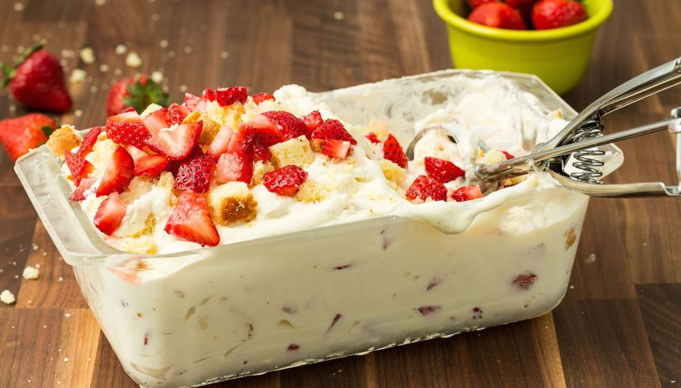

Strawberry Shortcake No-Churn Ice Cream
Strawberry Shortcake No-Churn Ice Cream
INGREDIENTS :
- heavy cream
- can sweetened condensed milk
- chopped strawberries, plus more for topping
- chopped poundcake, plus more for topping
METHOD :
- In a stand mixer fitted with the whisk attachment, beat heavy cream until stiff peaks form.
- Fold in sweetened condensed milk, strawberries, and pound cake.
- Transfer mixture to a 9"-x-5" loaf pan and smooth top with a spatula. Top with additional strawberries and pound cake and freeze until firm, 5 hours.
- When ready to serve, remove from freezer to let soften, 10 minutes.